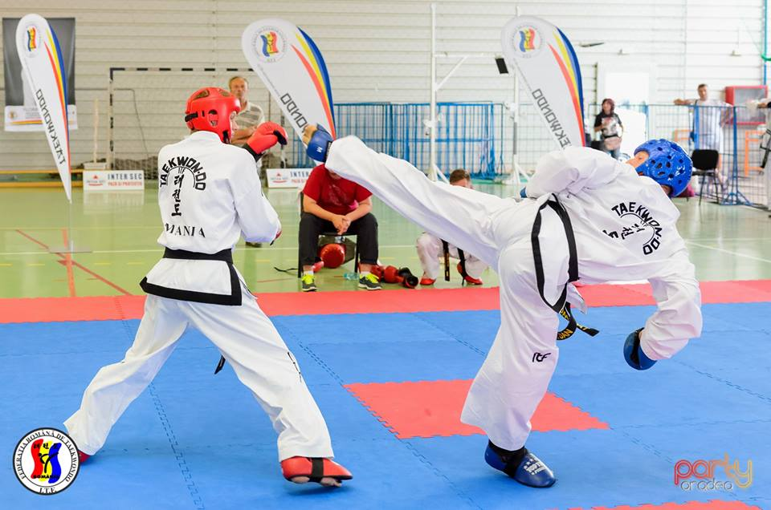
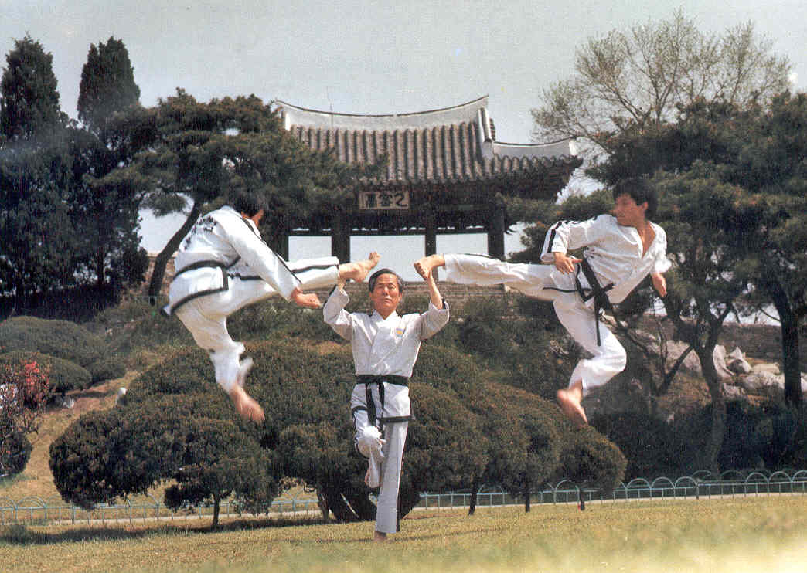
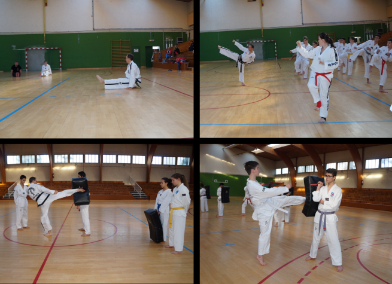
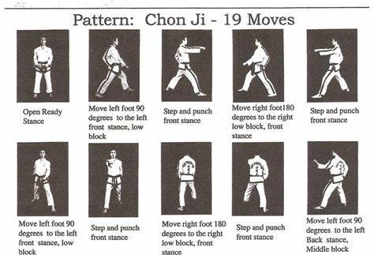
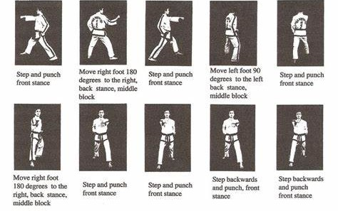
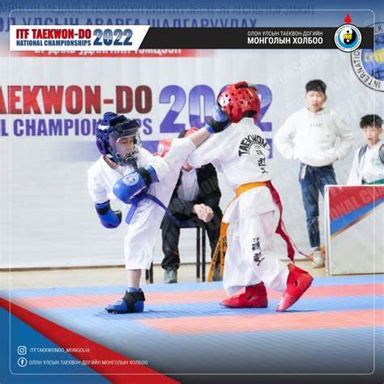
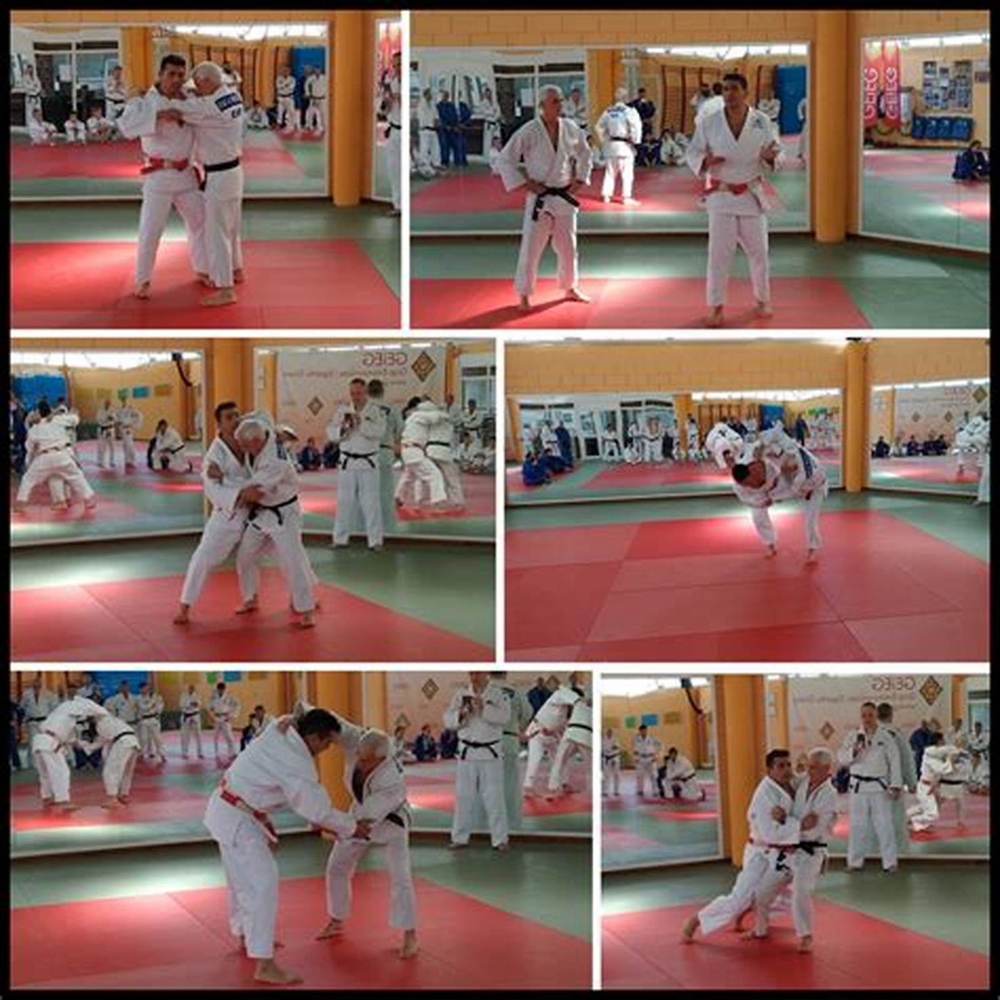
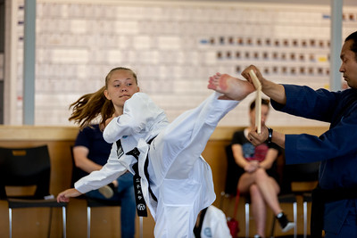

Bienvenue au Tae Kwon-Do ITF
Le Tae Kwon-Do ITF est un art martial coréen qui met l'accent sur les techniques de coup de pied, le jeu de jambes rapide et une approche équilibrée de l'autodéfense et du développement personnel.
Histoire
Le Tae Kwon-Do a été développé en Corée dans les années 1940 et 1950 par divers artistes martiaux coréens, avec des contributions majeures du Général Choi Hong Hi. La Fédération Internationale de Taekwon-Do (ITF) a été fondée le 22 mars 1966 par le Général Choi pour promouvoir et standardiser l'art au niveau mondial.
Principes
Le Tae Kwon-Do ITF est guidé par cinq préceptes :
- Courtoisie (Ye Ui)
- Intégrité (Yom Chi)
- Persévérance (In Nae)
- Contrôle de soi (Guk Gi)
- Esprit indomptable (Baekjul Boolgool)
Techniques
Tae kwon-Do ITF se concentre davantage sur l'autodéfense, incorporant plus de techniques de main et une approche philosophique de la formation. En revanche, WTF met l'accent sur la vitesse et la concurrence, avec un fort accent sur les coups de pied-de-tête et le jeu de jambes rapides.
Le Tae Kwon-Do ITF comprend diverses techniques :
- Techniques de frappe (coups de poing, coups de pied, blocages) 
- Formes (Tul)  
- Combat (Matsogi) 
- Autodéfense (Hosin Sul) 
- Casse (Gyokpa) 
Ceintures en Tae Kwon-Do ITF
Le système de ceintures en Tae Kwon-Do ITF représente la progression de l'élève. Voici les différentes ceintures, du débutant au maître :
Chaque ceinture de couleur a également des niveaux intermédiaires marqués par des barrettes, permettant une progression plus détaillée.